01 / 起点
我的经历
22 年离开大厂后，我自由职业 4 年。起号前没有完整创业经历，也没有系统做内容的经历，真正能卖的能力，是过去做过求职辅导、理解这个赛道，并愿意把它讲清楚。
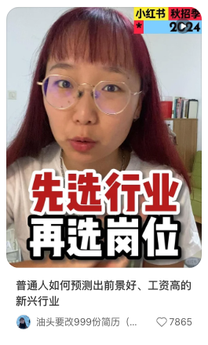
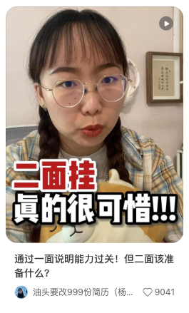
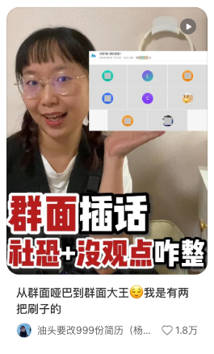
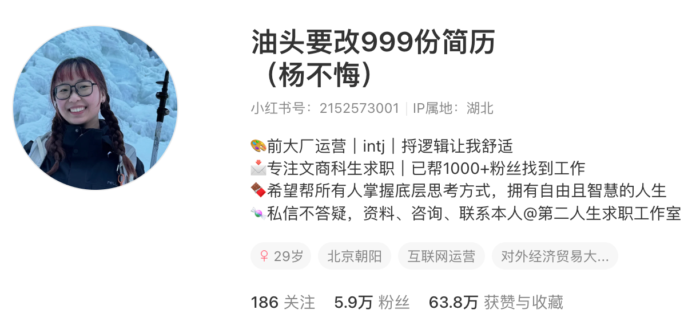
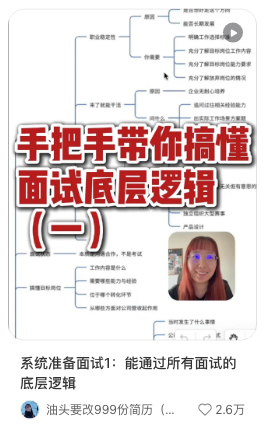
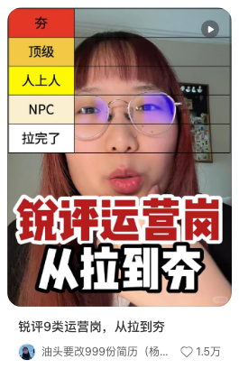
22 年离开大厂后，我自由职业 4 年。起号前没有完整创业经历，也没有系统做内容的经历，真正能卖的能力，是过去做过求职辅导、理解这个赛道，并愿意把它讲清楚。



起号前先想清楚：账号未来靠什么赚钱。粉丝量只是表层，产品、广告位、转化路径才决定账号有没有商业价值。
有自有产品就卖课、资料、服务或实物；没有产品，可以做分销、赚佣金，先验证用户愿意为什么买单。
好物分享、vlog、开箱、生活方式内容都适合植入广告，核心是让品牌方相信你能讲亮点，让用户习惯你的推荐。
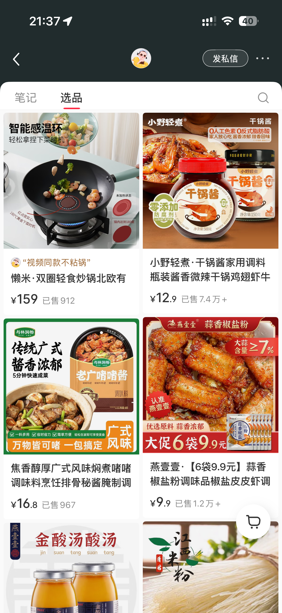
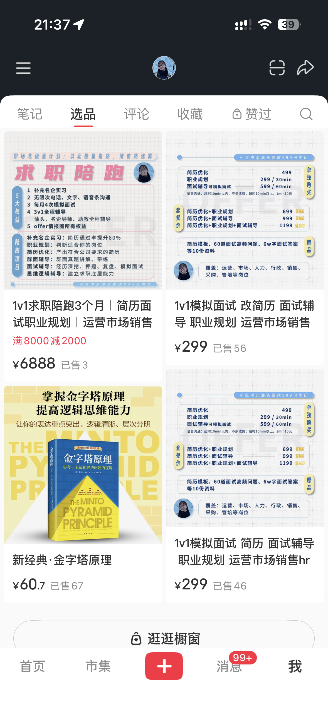
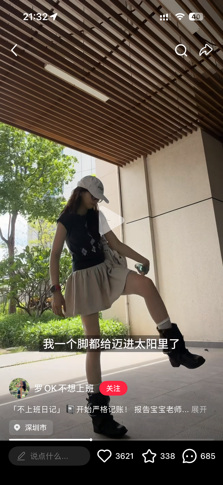
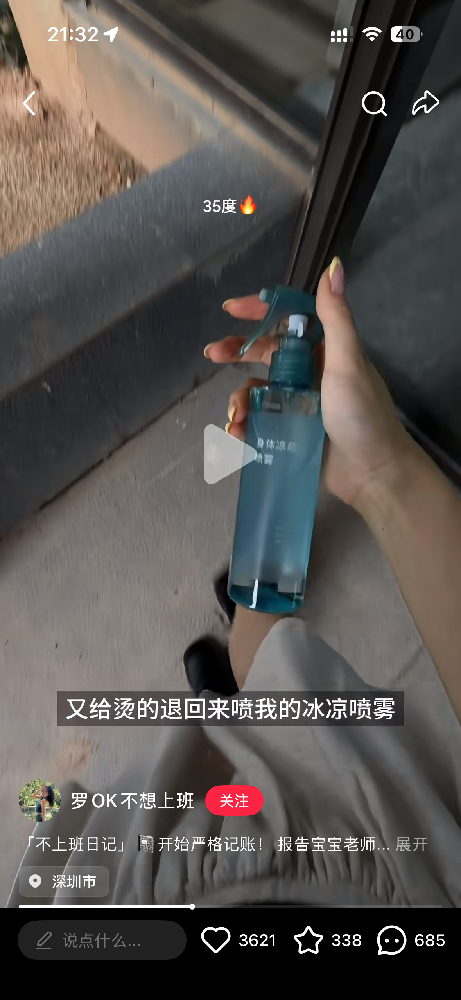
卖自己的能力，教过去的自己解决问题。
标品适合放大，非标服务适合高客单和深交付。
当交付稳定后，再考虑助理、合作和流程化。
小红书更依赖封面和标题，制作门槛相对低，用户主动选择内容；抖音更考验开头几秒、镜头节奏和停留。新手可以优先选择自己更能研究、能稳定输出的平台。
标题、开头和表达，让用户愿意点开并听完。
找对标、拆原因、迁移到自己的赛道。
先拿反馈，再迭代，不把第一版当代表作。
标题的任务是让用户一眼判断：这条内容和我有关，点开有收益；少一点炫技，多一点明确的点击理由。
先让标题在语文上顺畅，用户能轻松读懂。别为了关键词和字数，把句子压成看不懂的口号。
同样讲 “token”，只说概念很难吸引外行；加上职场账单、AI 使用成本、转行学习、时代红利等场景，用户才知道为什么要点开。
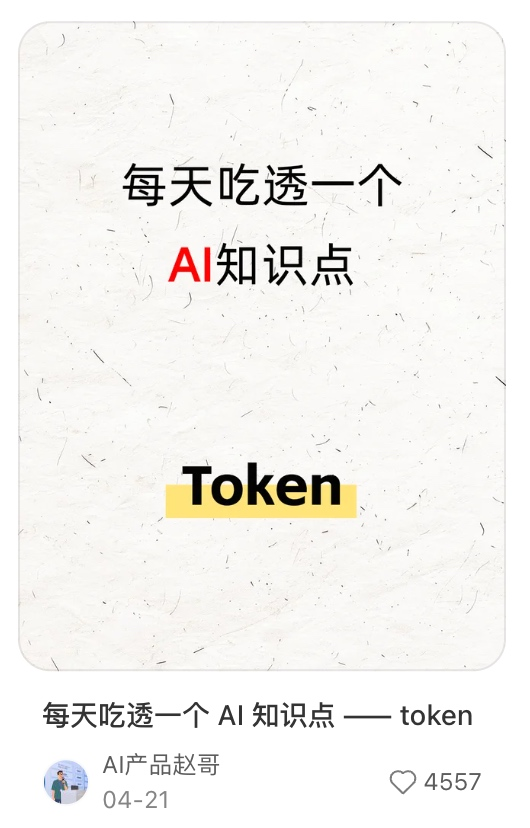
不要只凭自己觉得重要。去平台搜索关键词，看是否有爆款、用户怎么表达需求，再决定标题词。
封面图负责放大点击欲，前提是选题、标题和用户需求已经成立。
开头要让人继续看，并快速相信你真的懂她。几秒内要交代主题、关系和继续听的理由。
10 秒左右进入主线。可以不在第一秒扔结论，但要尽早让用户知道你讲什么、为什么值得听。
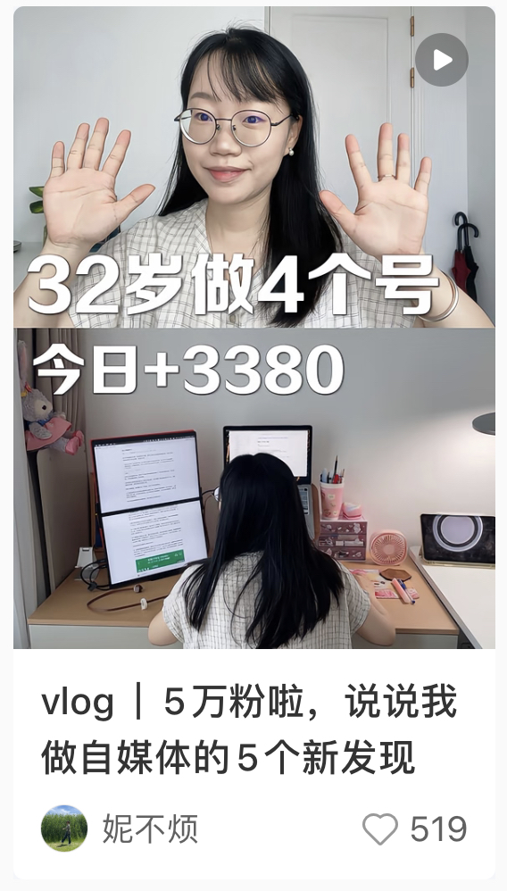
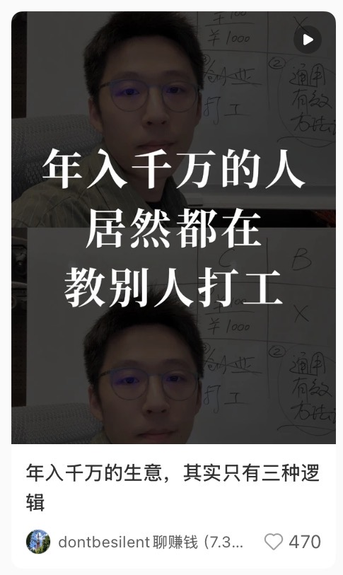
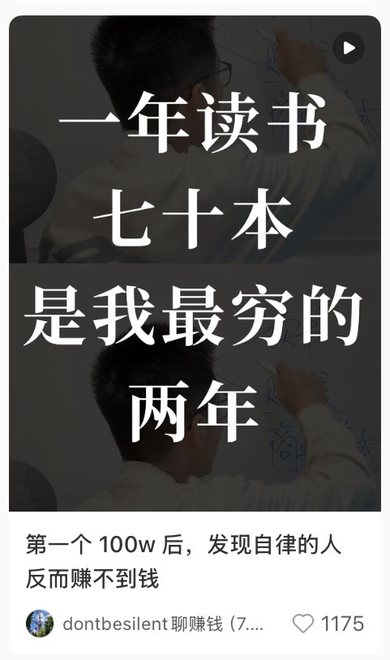
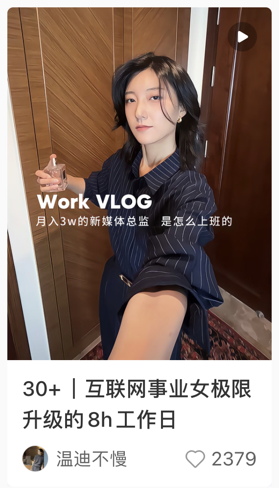
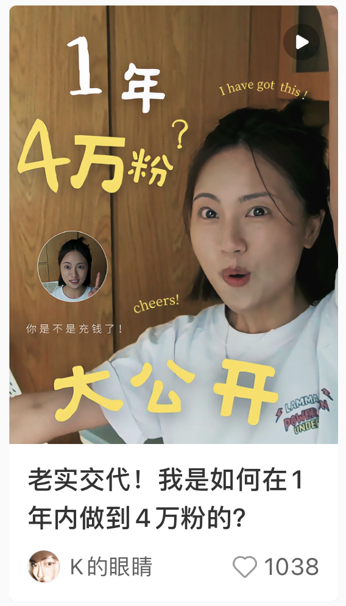
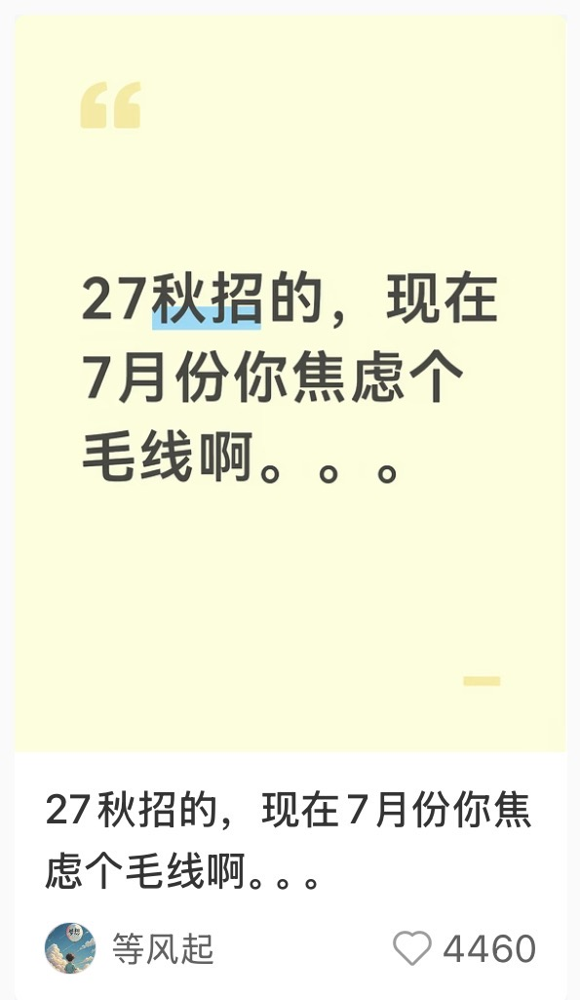
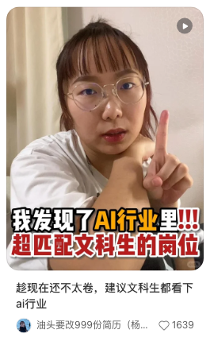
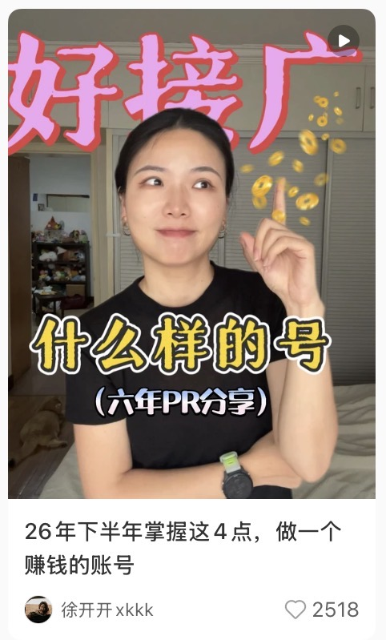
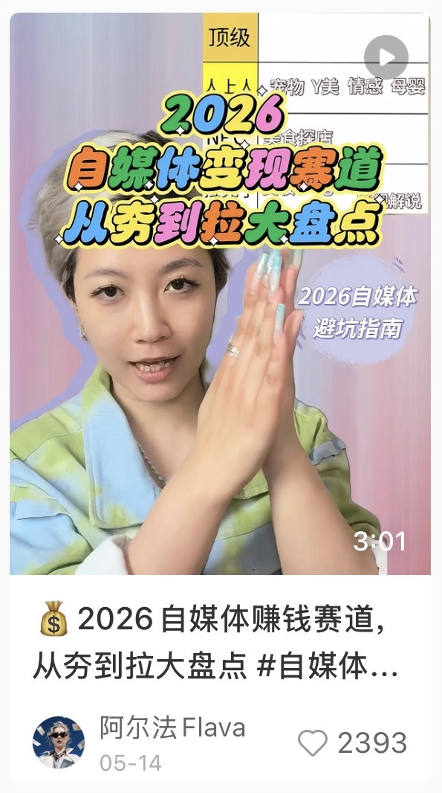
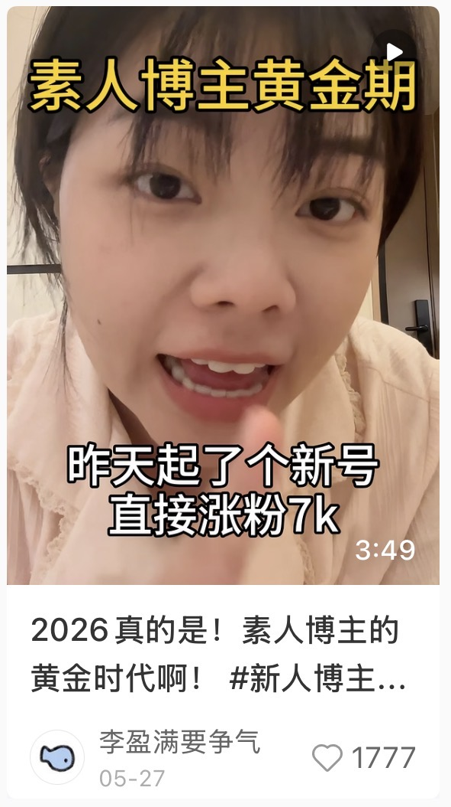
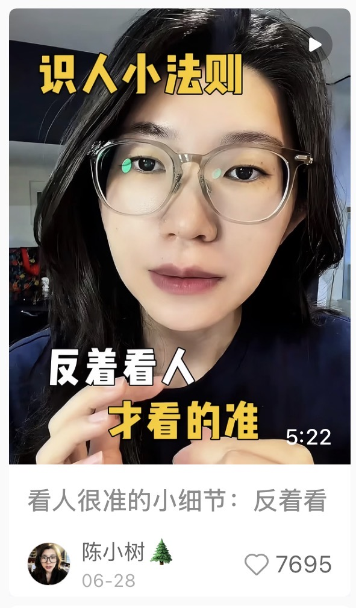
开头画面可以靠动感、素人感、对话感和轻剪辑增加停留。对新手来说，真实自然通常比精致模板更稳。
表达先做到流畅、清晰。用户能听懂，比“显得高级”重要得多。
干货博主要把专业知识翻译成人话：可以讲深，但要用直白语言解释外行真正卡在哪里。
内容也要立等可用。短视频用户常常先被简单、明确、能马上照做的答案吸引，再逐步理解更严谨的判断。
生活类内容不能只展示流水账。看点来自鲜明人设、有趣事件、具体处境，以及用户想继续追的变化。
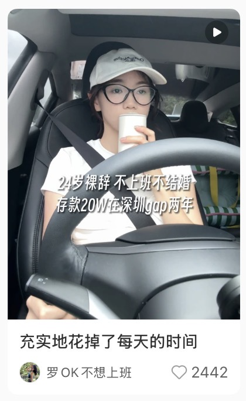
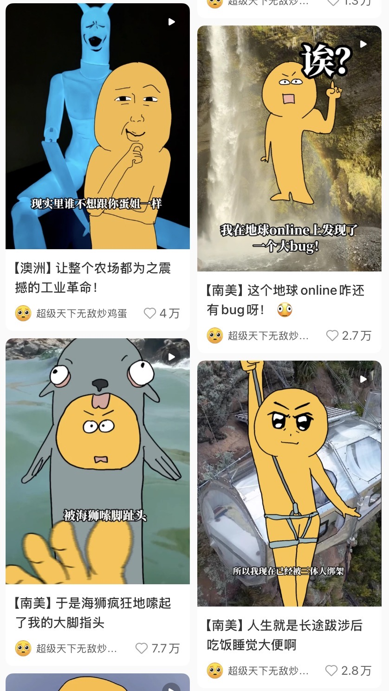
找对标的目的，是看别人如何完成表达和转化。可借鉴选题、结构、开头和引流设计，但不要把脚本搬成自己的内容。
看商业模式、人设定位、简介、转化路径、转型过程，以及她如何从内容走向成交。
看选题、标题、开头、结构、素材选择、广告位、剪辑节奏、引流方式和商品引出方式。
更重要的是追问原因：这条为什么能爆？是用户想要结论、内容有争议、蹭到热点，还是让外行终于听懂了？
新人优先看 1k 到 2w 粉、数据稳定的号，参考价值通常更高。
赛道接近即可，也可以看相邻赛道找新角度。
观察广告位、接广频率、引流路径、产品设计和私域状态。
具体看什么，取决于你当下要解决剪辑、转化、选题还是定位问题。
第一次发内容很难完美，定位、表达、节奏都要靠实际发布长出来。先发布，才有反馈；有反馈，才有下一版。
制作难度低，容易找对标，也更方便训练标题、开头和结构。
可以讲日常、有主题地记录一天，也可以用观点型配音承载干货，优势是人设更立体、广告位更多。
特点来自人设、经历、思考方式、性格和特长，它是用户记住你的锚点。
先从自己比别人更熟、更能解释的部分切入，浅交付也能起步，再持续提高产品深度。
生活轨迹相似，不代表成长经历、表达方式、情绪反应和判断框架相同。
素人感、女性成长、职场矛盾、赚钱技巧等议题能带流量，但要有真实理解，避免只套外壳。
来自自身积累、对标账号、评论区、用户反馈、选题细分和热点事件。